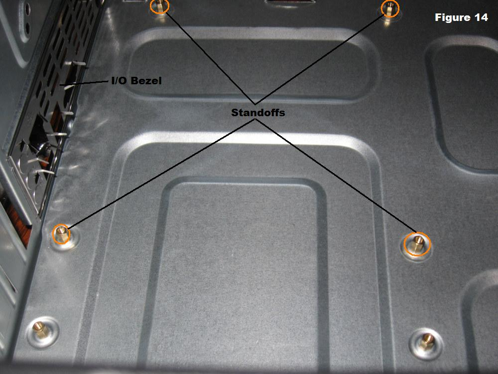
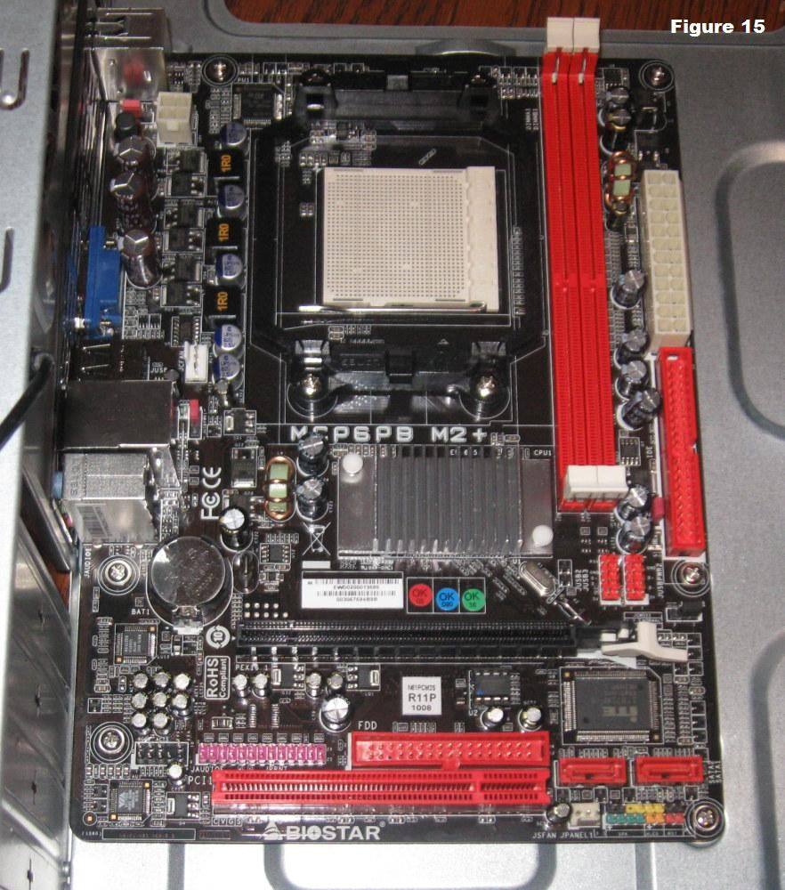
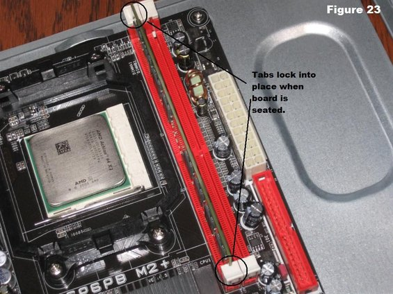
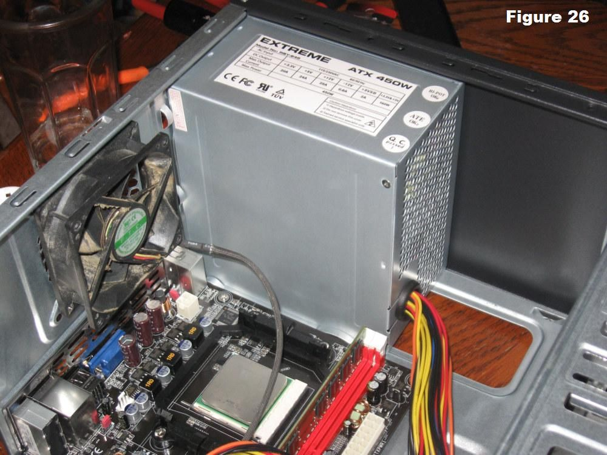
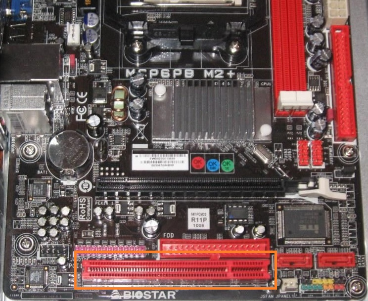
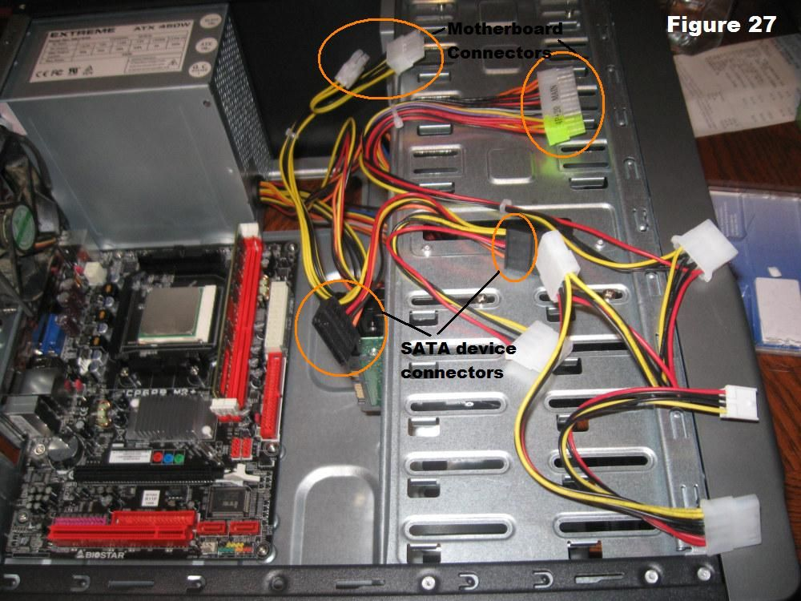

This guide gives step-by-step instructions on how to assemble a computer. This guide is for a basic computer build and does not cover more complex topics (such as water cooling). The build can take anywhere from 1 to 4 hours.
Step 1: Gathering Hardware
The following hardware will be used in this assembly guide:
- CPU
- CPU Cooler
- Video Card
- Motherboard
- Memory
- Computer Case
- Storage
- Power Supply
You must buy parts that are compatible with each other or the computer won't work. When buying a CPU check its socket type. This must match the corresponding socket of the motherboard. For example, an Intel Core i7-7700K has a Socket LGA 1151, so you will need a motherboard with Socket LGA 1151. The computer case must match the form factor of the motherboard. For example, an ATX motherboard fits in an ATX case. The motherboard must also be compatible with the memory. For example, DDR4 2400 memory must be matched with a motherboard compatible with DDR4 2400 memory. The computer must also have a large enough power supply to handle the pc. The exact amount of power can vary between builds. Most of the power consumption will come from the CPU and the video card. The video card and CPU will have their power requirements listed on their store page. It's also worth noting that some CPUs don't come with a cooler. People who buy a CPU without a cooler or those who want something higher-grade will need to purchase the cooler separately.
You will also need the following tools:
- Phillips-Head Screwdriver
- Thermal Compound
- Flashlight (optional)
- Anti-Static Wrist Strap (optional)
Many CPUs or CPU coolers come with thermal compound, though it may be cheap. A flashlight can help, but is not necessary. An anti-static wrist strap will prevent static electricity. Static electricity can damage the components of the computer, so it is a good idea to take precautionary measures by grounding yourself with an anti-static wrist strap.

Step 2: Open the Case
Open the case by removing the panels on each side. First remove the screws on the back that are holding the side panels in place. Then slide the panel back and lift it up. Now remove any packaging material or parts from inside the case.
Step 3: Ground Yourself (optional)

Wrap the grounding strap around your wrist and clip the end to a metal section of the computer case.
Step 4: Install the Motherboard

First take the I/O bezel plate included with the motherboard and place it in the rectangular opeing in the back of the case. Push it from the inside towards the outside.
Next install the standoffs that are included with the case. These screw into the motherboard mounting holes in the open area of the case. Check the positions of the screw holes in the motherboard for the exact placement of the standoffs.

Place the motherboard in the case so that the screw holes match up with the standoffs and the interface ports match up with the I/O bezel.
Insert the screws into the motherboard and incrementally tighten each screw a small amount until each screw is in place.
Step 5: Install the Hard Drive

Locate a 3.5" drive bay to install the hard drive in. Slide the hard drive into place until the screw holes in the case are lined up with the holes on the side of the hard drive. Once it is lined up, screw the hard drive into place.
Step 6: Install the CPU

Locate the orientation mark that is on one corner of the CPU. The mark is typically an arrow. Lift the small metal lever next to the socket. Next find the orientation mark on the motherboard, line the CPU up with this mark, and gently insert the CPU into the socket. Now push the metal lever down, locking the CPU into place.
Step 7: Install the Memory

Insert the memory into the socket next to the CPU. Make sure the notch in the memory matches up with the notch on the motherboard. If not, turn the memory around 180°. Press firmly on both sides of the memory until it snaps into place. Make sure the tabs on the ends lock into place.
Step 8: Install the CPU Cooler

Put a small amount of thermal compound on the CPU. Line the cooler up on top of the CPU. Pull down the locking rod on the cooler to lock it into place. Connect the fan's power cable to the motherboard. Consult the motherboard manual for the exact location.
Step 9: Install the Power Supply

The power supply will be placed in the back of the case at the top or bottom, depending on the case. Align the power supply with the mounting holes in the case. Now screw the powersupply into place.
Step 10: Install the Video Card

Locate the PCI-Ex16 slot below the CPU. Unscrew and remove the adjacent slot covers from the back of the case. Firmly insert the video card into the PCI slot and push down the plastic lock at the end of the slot to lock the video card into place. Now screw the video card into place at the same location where you removed the slot covers.
Step 11: Connect the Cables

Connect the 24 pin cable and the 4 pin cable from the power supply to the motherboard. Consult the motherboard manual for exact placement.
Connect the SATA power cable to the hard drive. Connect the SATA interface cable from the motherboard to the hard drive. Consult the motherboard manual for the location of the SATA ports.
Connect the 6 pin cable from the powersupply to the video card.
Small data cables connect the front panel devices on the case to the motherboard. Consult the motherboard manual for the placement of these cables.